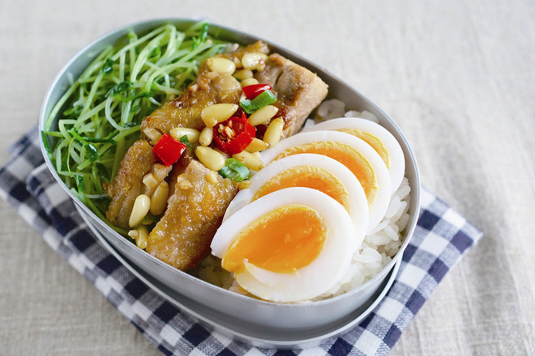

松子蒜蓉鸡便当

关于松子蒜香鸡便当的做法还有疑问？ 提一个问题
多年前跟一位铁板烧师傅学的一道家常菜。先将去骨鸡腿干煎到表面金黄，分切成适口大小之后，再做后续的调味动作。最主要的重点就是干煎鸡腿时的耐心等待，一定要等到一面煎到上色香酥，再翻面。
记得还是厨房新手的时候，我总是在食材下锅后就急着做些什么，要么翻炒，要么翻面移动位置，好像不做这些事情，就不够称职。经过那位铁板烧师傅的提醒，我才恍然大悟，原来很多时候，食材入锅后是需要静置等待的，让热源有足够的时间将食材加热至理想的状态。
使用大量蒜末葱末做佐料的香煎鸡块，用盐简单提味，味道就很浓郁，最后加入烤得香香的松子，在吃的时候，可以额外享受酥脆的口感，香气也更加倍了。
松子蒜香鸡便当的做法
- 1
制作<松子蒜香鸡>：
辣椒切圈，松子放入烤箱烘焙。鸡腿去骨，拭干水分。 - 10
开始制作<蒜炒豌豆苗>：
蒜片冷油下锅，中火慢慢炒香后下豌豆苗，翻炒一会儿，让油脂均匀黏附在食材上，加入适量清水，加盖焖煮至锅缝飘出白烟后，开盖检视蔬菜熟软状态，如已达喜欢的熟度，加盐调味，炒匀即可。
上传你做的松子蒜香鸡便当